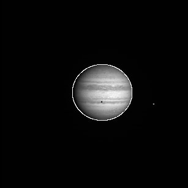
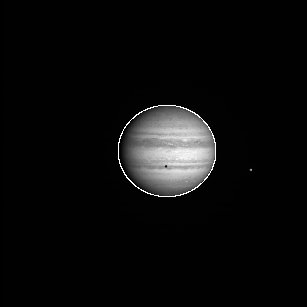

mosaic_example-batch.pro
batch fileMOSAIC EXAMPLE
Created by Joe Spitale Edited for manual by Mark Moretto
This example file demonstrates how to construct a mosaic using OMINAS. This example file can be executed from the shell prompt in the ominas/demo directory using:
or from within an OMINAS IDL session using:
After the example stops, later code samples in this file may be executed by pasting them onto the IDL command line. ; This first section uses DAT_READ to read in the image and then displays the image using tvim.
Read and display image
DAT_READ reads the image portion (im) and the label (label) and returns a data descriptor (dd) containing the image and label and information obtained through OMINAS' configuration tables. If a file exists in the same directory and with the same name as the image, except with the extension ".dh", then it is assumed to be a detached header and it is read as well.
The files w1352097259.1 and n1352037683.2 are Cassini wide- and narrow- angle frames of Jupiter. 2000r.img and 2100r.img are Galileo SSI images of Ganymede.
TVIM is called to display the image (im) in a new window with the y coordinate as top-down:
files = getenv('OMINAS_DIR')+'/demo/data/'+['n1350122987.2','/n1351469359.2']
dd = dat_read(files, count=n)
zoom = 0.3
for i=0, n-1 do tvim, dat_data(dd[i]), zoom=zoom, /order, /new
tvim, /list, wnum=ww


Get camera, planets, rings and sun objects:
_gd = {cd:obj_new(), gbx:obj_new(), dkx:obj_new(), ltd:obj_new()}
gd = replicate(_gd, n)
for i=0, n-1 do gd[i].cd = pg_get_cameras(dd[i])
for i=0, n-1 do gd[i].gbx = pg_get_planets(dd[i], od=gd[i].cd, name='JUPITER')
for i=0, n-1 do gd[i].dkx = pg_get_rings(dd[i], pd=gd[i].gbx, od=gd[i].cd)
for i=0, n-1 do gd[i].ltd = pg_get_stars(dd[i], od=gd[i].cd, name='SUN')
limb_ptd = objarr(n)
for i=0, n-1 do limb_ptd[i] = pg_limb(gd=gd[i])
Navigate on limbs automatically
PG_FARFIT finds the limb to within a few pixels. In reality, you would want to refine the pointing by scanning for the limb and performing a least-squares fit, but for the purposes of clarity in this example, the inital fit will do:
edge_ptd = objarr(n)
for i=0, n-1 do edge_ptd[i] = pg_edges(dd[i], edge=10)
dxy = dblarr(2,n)
for i=0, n-1 do dxy[*,i] = pg_farfit(dd[i], edge_ptd[i], [limb_ptd[i]], ns=[5,5])
for i=0, n-1 do pg_repoint, dxy[*,i], 0d, gd=gd[i]
for i=0, n-1 do limb_ptd[i] = pg_limb(gd=gd[i])
for i=0, n-1 do pg_draw, limb_ptd[i], wnum=ww[i]
 

See the PG example for examples of least-squares fits to image features
Correct photometry
Here, a crude photometric correction is performed for the purposes of this example.
In addition to the corrected images, the output descriptors, dd_pht, will contain the photometric angles in their user data arrays with the names 'EMM', 'INC' and 'PHASE':
dd_pht = objarr(n)
for i=0, n-1 do dd_pht[i] = pg_photom(dd[i], gd=gd[i], $
refl_fn='pht_refl_minneart',refl_parm=[0.9d], outline=limb_ptd[i])
for i=0, n-1 do tvim, dat_data(dd_pht[i]), ww[i]

Project maps
Note that all map projections use the same map descriptor.
Also, aux=['EMM'] is used with pg_map to direct it to reproject the emmision angle array that was produced and stored in the data descriptor by pg_photom. That array will be needed by pg_mosaic:
map_xsize = 800
map_ysize = 400
md = pg_get_maps(/over, gbx = pd1, $
name='JUPITER',$
projection='RECTANGULAR', $
fn_data=ptr_new(), $
size=[map_xsize,map_ysize], $
origin=[map_xsize,map_ysize]/2 )
Do the map projections, frmo objects dd_pht, using map descriptor md:
Display the results:
for i=0, n-1 do tvim, dat_data(dd_map[i]), /new

Introducing wind profiles
Use the commented commands instead to include a zonal wind profile in the projection:
for i=0, n-1 do $
dd_map[i] = pg_map(dd_pht[i], md=md, gd=gd[i], aux=['EMM'], $
shear_fn='pm_shear_zonal', $
shear_data={vel:cos((dindgen(181)-90)*!dpi/180d) * 100d, $
dt:bod_time(gd[i].cd)-bod_time(gd[0].cd)})
Construct the mosaic
The combination function 'emm' combines the maps using wighting proprtional to emm^x, where emm is the emmision cosine. It also imposes a minimum emmision cosine, emm0. Note that the emission angles were computed by pg_photom and reprojected by pg_map, as directed by the 'aux' keyword:
dd_mosaic = pg_mosaic(dd_map, mosaic=mosaic, $
wt='emm', comb='sum', data={x:5, emm0:cos(85d*!dpi/180d)})
tvim, mosaic, /new
Save the mosaic and map info
To read the mosaic and projection info:
dd = dat_read('./data/test.msc', mosaic, label)
md = pg_get_maps(dd)
File attributes
| Modification date: | Mon May 7 13:19:54 2018 |
| Lines: | 45 |
| Docformat: | rst rst |